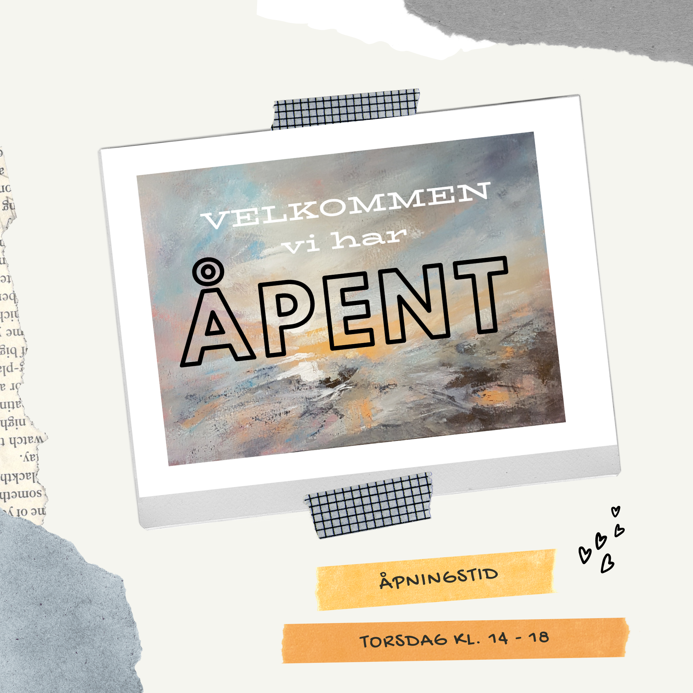
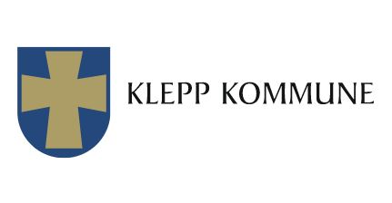

Åpningstid

Jeg har nå tatt juleferie frem til den 11. januar, men dersom det er noe du har lyst å se på må du bare ta kontakt.
Åpningstid fra 11. januar blir:
Tirsdag kl 11-14
Torsdag kl 14-18
og ellers kan visninger avtales ved behov.
Jeg ser frem til å møte deg i galleriet, og husk at det ikke er kjøpeplikt (du er like velkommen innom for å ta en titt eller slå av en prat).
Tegnegruppen

Liker du å tegne, eller kanskje du pleide å tegne før men ikke har satt av tid til det i det siste, eller du har et ønske om å starte opp med tegning. Kanskje du er ledig på dagtid og kunne tenkt deg å treffe andre å gjøre noe hyggelig sammen med?
Tegnegruppen treffes på tirsdager kl. 11 - 14 i Mitt Atelier i Hattelandsgården, midt i Kleppe sentrum.
Oppstart 11. januar 2022.
Det er gratis parkering utenfor.
MER INFORMASJON
Kulturstipend 2021

En stor takk til Klepp kommune som i år har valgt å tildele meg kulturstipend.
Klepp kommune kan hvert år dele ut stipend til personer som i yrke eller fritid driver virksomhet innen det utvidede kulturområdet i Klepp.
Jeg er takknemlig både for anerkjennelsen og for den økonomiske støtten. Stipendet vil bli brukt til produksjon av kunst og til å utforske og videreutvikle min kunstkompetanse.
Klepp kommune, Kultur